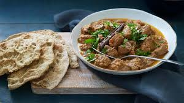

1. First, take fresh lamb pieces and wash them properly with clean water.
Remove excess water and keep the lamb aside in a bowl.
2. Marinate the lamb using turmeric powder, red chili powder, salt, ginger-garlic paste, curd, and lemon juice. Mix well and leave it for 1 hour for better taste.
3. Heat oil in a cooker or pan and cook the marinated lamb for a few minutes.
Roast lightly until the meat changes color.
4. In another pan, heat oil and add chopped onions. Fry them until golden brown. Add ginger-garlic paste and cook until the raw smell disappears.
5. Add chopped tomatoes or tomato puree and cook well until the gravy becomes thick.
Stir continuously until oil separates from the masala.
6. Add turmeric powder, red chili powder, coriander powder, garam masala, and salt. Mix all spices properly and cook for a few minutes.
7. Add the roasted lamb into the gravy and mix well. Add water as required and cook until the lamb becomes soft and tender.
8. Simmer the curry on low flame for 15–20 minutes so the lamb absorbs all flavors properly.
9. Finally, garnish with fresh coriander leaves.
Serve hot lamb curry with rice, naan, roti, or chapati.
